Project N5; September 2023 Progress
My progress in September 2023. Updates are shown in reverse chronological order.
Learning to Model and Rig a Character
today's task: modelling and rigging a character from scratch
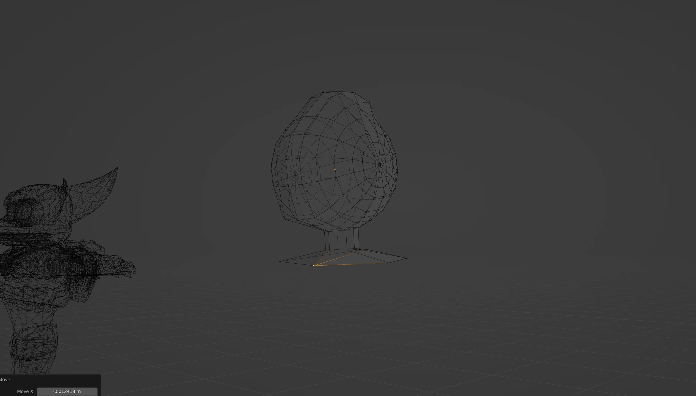(Ratchet for scale)
whaddya lookin at pinhead
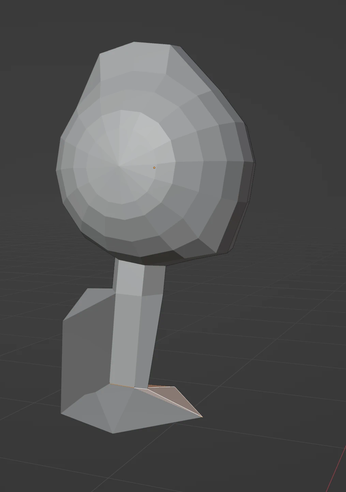is it a bird? is it a plane? no, it's arms
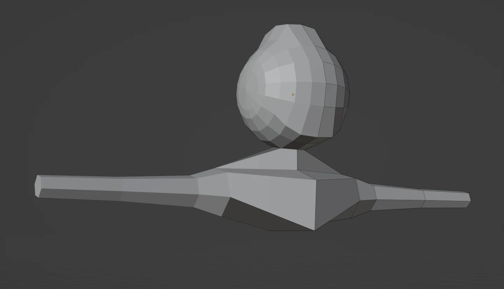*Mii Maker theme intensifies*

feet are difficult
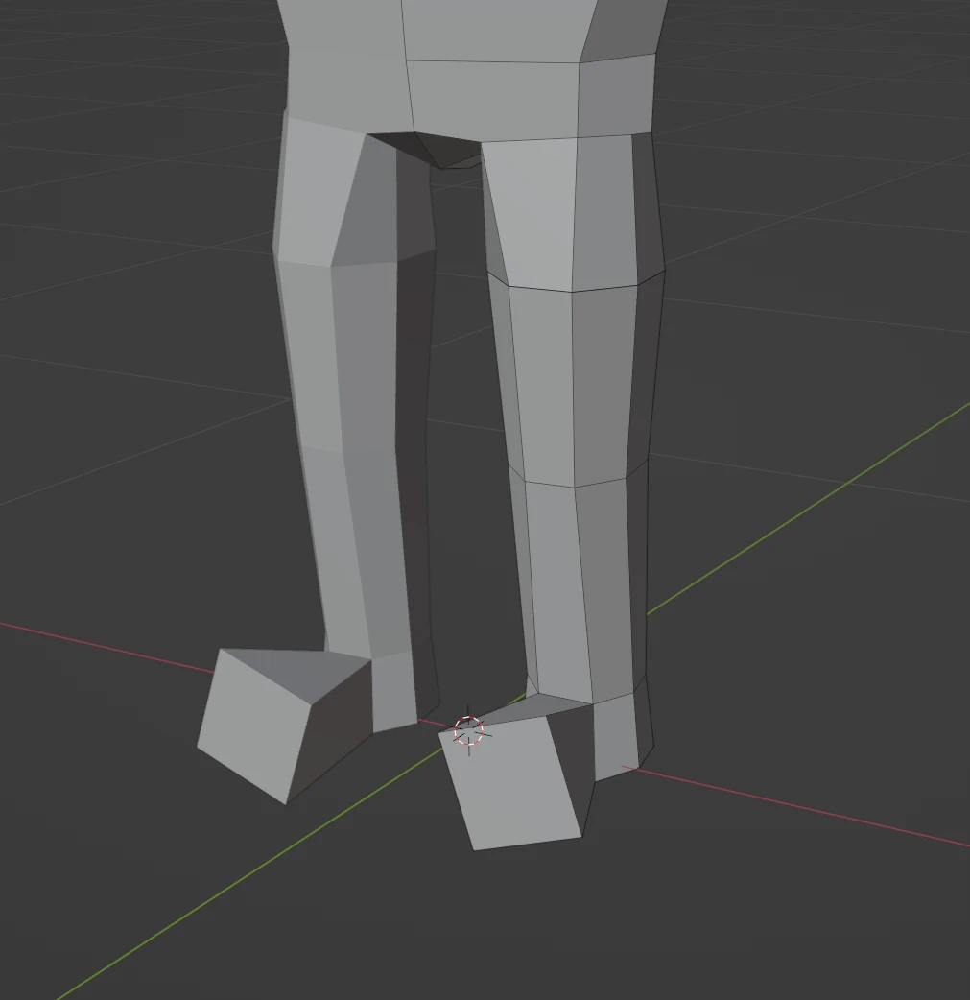yoooo actually, not half bad
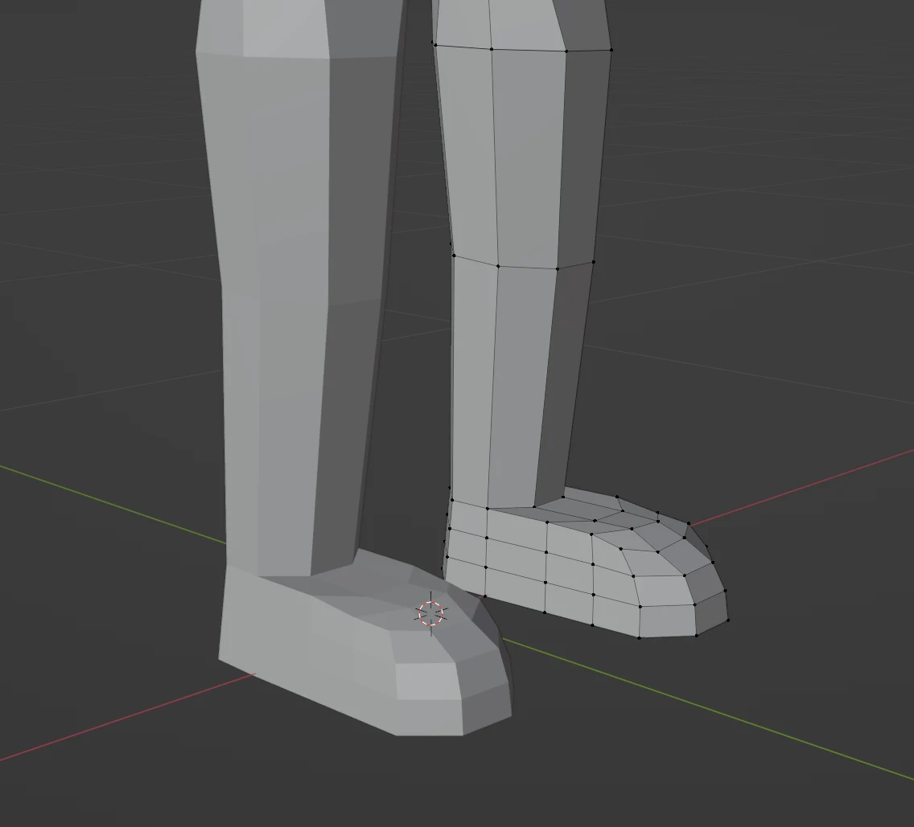that one might hurt
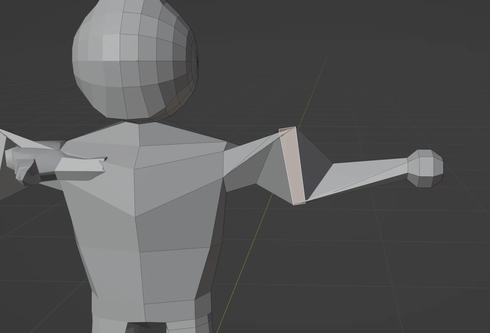we have a character!!
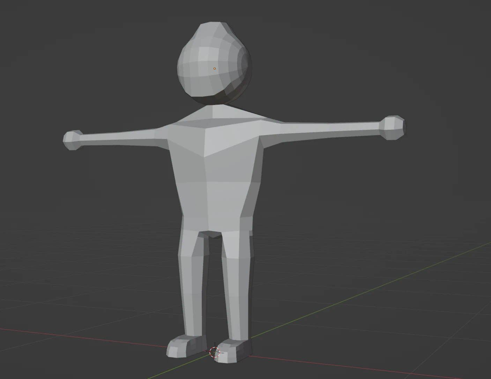we've been rigged!
we come in peace
brief texture troubles
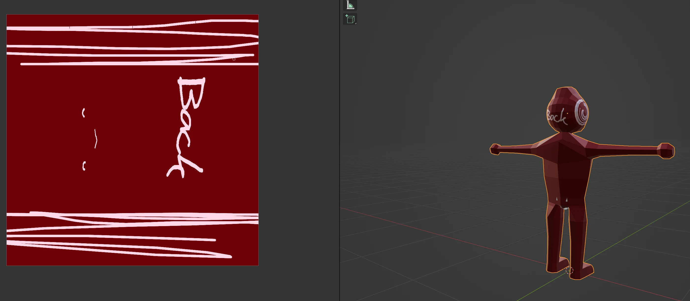my character is now a playable character
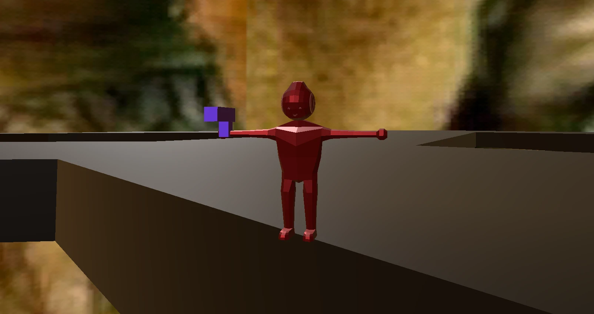 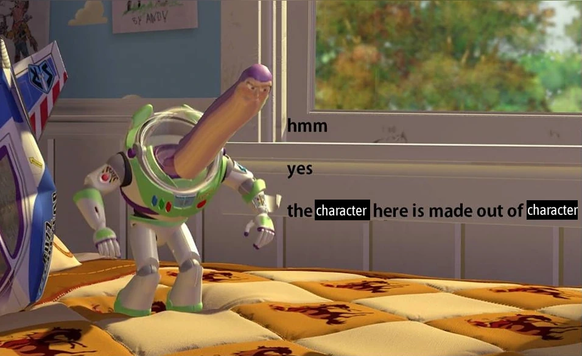Imposing dominance
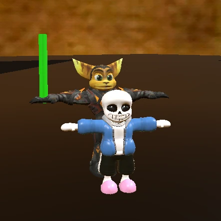Language Options
The game now supports English and German as language options! Godot makes this very easy. All that's needed is to create a table with keys and the corresponding translations, export it as CSV, add them to the game (and don't forget to add the generated translation files in the project settings as well!), and then use TranslationServer.setLocale(locale) to set the language whenever needed – game defaults to English en. For UI elements, supplying the key in the text field suffices, and for strings in script, use tr(key). Easy as that!
Smooth Player Movement
Using lerp() as well as lerp_rotation(), the player's movements are now smoother than before! The character rotates smoothly whenever pointing in a given direction and when strafing. Furthermore, the character now has a slight acceleration and deceleration in their movement.
Don't Waste Your Ammo!
Guns now have ammo counters! They can only fire for as long as they have ammunition left – as it should be. Unfortunately, unloading bullets unto Sans does nothing.
Conversation Camera
There's now a special camera angle for conversations with NPCs! Unfortunately, as the camera is bound to the player, and the player's position is unmodified when entering a conversation, this can result in blocking the NPC, or even facing a different direction entirely – how rude!
Dialogue
The game now supports talking with NPCs. I only implemented this because I thought of something funny and I wanted to put it in the game.
A Gun
The gun can shoot! Or can it? Well, the bullet doesn't exactly move…
Bullets have been converted into RigidBody3D which is great for collision but unfortunately initialises the bullets to be affected by gravity. Since the bullets are also parented to the player, it means that the fallen bullets move with the player. I don't think that's how guns are supposed to work.
The gun now shoots properly! Not only do the bullets fly, but they fly in the correct direction as well! This is possible thanks to simple vector math, as the only thing needed to calculate a velocity vector for the bullet is to put two nodes on the gun, one at the front (where the bullet will fly from) and one further back, and calculate a vector between the two nodes!
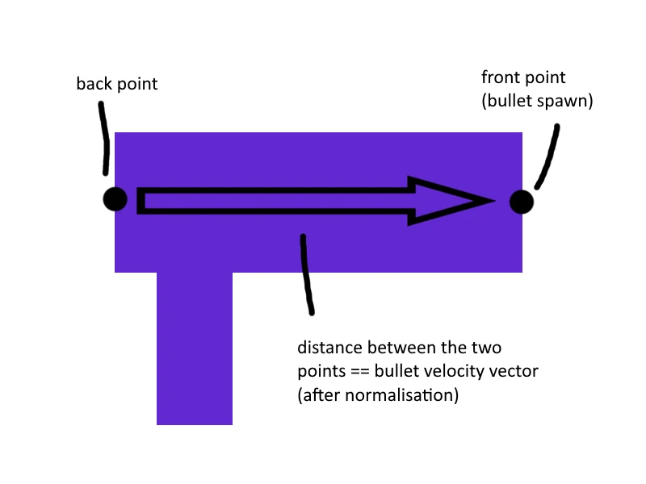Helicopter Ratchet
character go spinny
The pause menu also makes a brief cameo! It's designed in a very simple way, and meant to replicate the pause menu from Ratchet & Clank 2002 while being legally distinct!
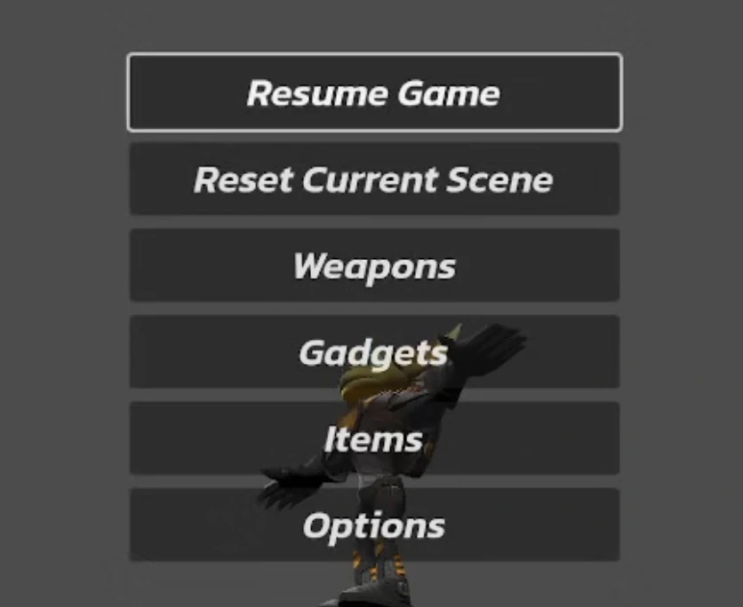A Better Camera
The camera system has been replaced! This implementation simply uses SpringArm3D with a Camera3D as its child. This allows for the camera to not clip into walls (though it really likes clipping into the floor for some reason), and overall feels much more responsive. Not just that though – the player's movement input is now adjusted to where the camera points! When the player presses forward, they are now moving in the direction the camera is pointing. Previously, movement was independent from the camera's rotation, which of course wouldn't make sense for a game like this.
Look Where You're Jumping!
The character can jump! Jump height is set unnaturally high as a test. The player can double jump, but only from a grounded state; falling off a cliff counts as the first jump, thus only allowing the player to jump once. Also, gravity is broken again. Also, a player-controllable camera! This was implemented with a custom third person camera plugin, which proved to be a bit jumpy.
Gravity Functions As It Should
Gravity is fixed, and the camera angle has been adjusted, though not fixed to the character yet. It's kind of funny watching this little character move around.
One Small Step
A character has been added and the player can control them! It's influenced by gravity too, although it falls at an unnaturally rapid rate when thrown off the edge. This is because the downward velocity kept increasing even when grounded, and is fixed in a later version. Also, the character faces the wrong direction; moving forward results in the character facing the camera instead of forward. This is fixed once I replaced the character model with one where it's more obvious which side is forward.